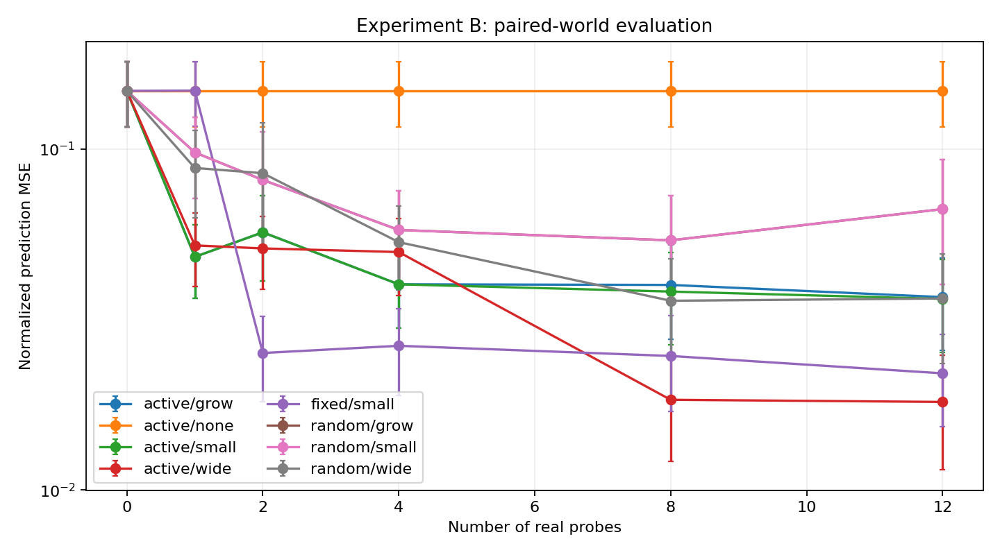

MuJoCo 数值感知 · 主动探索 · 快速局部记忆
最终预算下，随机减主动的配对 NMSE 差：0.030267。正值表示本次主动策略更好，负值表示更差。
误差条为一个随机种子内世界间的标准误，不能替代多种子统计。容量扩展不是发现物理概念的证明。

| 策略 / 记忆 | 真实试探次数 | 平均 NMSE | 世界间标准误 |
|---|---|---|---|
| random/small | 0 | 0.147961 | 0.031788 |
| random/small | 1 | 0.097621 | 0.025983 |
| random/small | 2 | 0.081085 | 0.031329 |
| random/small | 4 | 0.057850 | 0.017427 |
| random/small | 8 | 0.053932 | 0.019043 |
| random/small | 12 | 0.066593 | 0.026495 |
| fixed/small | 0 | 0.147961 | 0.031788 |
| fixed/small | 1 | 0.148249 | 0.031744 |
| fixed/small | 2 | 0.025206 | 0.007022 |
| fixed/small | 4 | 0.026461 | 0.007564 |
| fixed/small | 8 | 0.024705 | 0.007729 |
| fixed/small | 12 | 0.021971 | 0.006610 |
| active/small | 0 | 0.147961 | 0.031788 |
| active/small | 1 | 0.048240 | 0.011807 |
| active/small | 2 | 0.056929 | 0.016006 |
| active/small | 4 | 0.040075 | 0.010268 |
| active/small | 8 | 0.038159 | 0.011469 |
| active/small | 12 | 0.036327 | 0.010978 |
| active/none | 0 | 0.147961 | 0.031788 |
| active/none | 1 | 0.147961 | 0.031788 |
| active/none | 2 | 0.147961 | 0.031788 |
| active/none | 4 | 0.147961 | 0.031788 |
| active/none | 8 | 0.147961 | 0.031788 |
| active/none | 12 | 0.147961 | 0.031788 |
| active/wide | 0 | 0.147961 | 0.031788 |
| active/wide | 1 | 0.052119 | 0.012641 |
| active/wide | 2 | 0.051068 | 0.012355 |
| active/wide | 4 | 0.049834 | 0.012739 |
| active/wide | 8 | 0.018379 | 0.006241 |
| active/wide | 12 | 0.018113 | 0.006667 |
| active/grow | 0 | 0.147961 | 0.031788 |
| active/grow | 1 | 0.048240 | 0.011807 |
| active/grow | 2 | 0.056929 | 0.016006 |
| active/grow | 4 | 0.040075 | 0.010268 |
| active/grow | 8 | 0.039915 | 0.012307 |
| active/grow | 12 | 0.036758 | 0.011111 |
| random/wide | 0 | 0.147961 | 0.031788 |
| random/wide | 1 | 0.087921 | 0.025112 |
| random/wide | 2 | 0.084865 | 0.034387 |
| random/wide | 4 | 0.053281 | 0.014683 |
| random/wide | 8 | 0.035865 | 0.011822 |
| random/wide | 12 | 0.036422 | 0.012894 |
| random/grow | 0 | 0.147961 | 0.031788 |
| random/grow | 1 | 0.097621 | 0.025983 |
| random/grow | 2 | 0.081085 | 0.031329 |
| random/grow | 4 | 0.057850 | 0.017427 |
| random/grow | 8 | 0.053932 | 0.019043 |
| random/grow | 12 | 0.066593 | 0.026495 |
metrics.csv：逐世界指标；interactions.jsonl：真实交互；growth_events.json：扩展决策；manifest.json：版本和哈希。